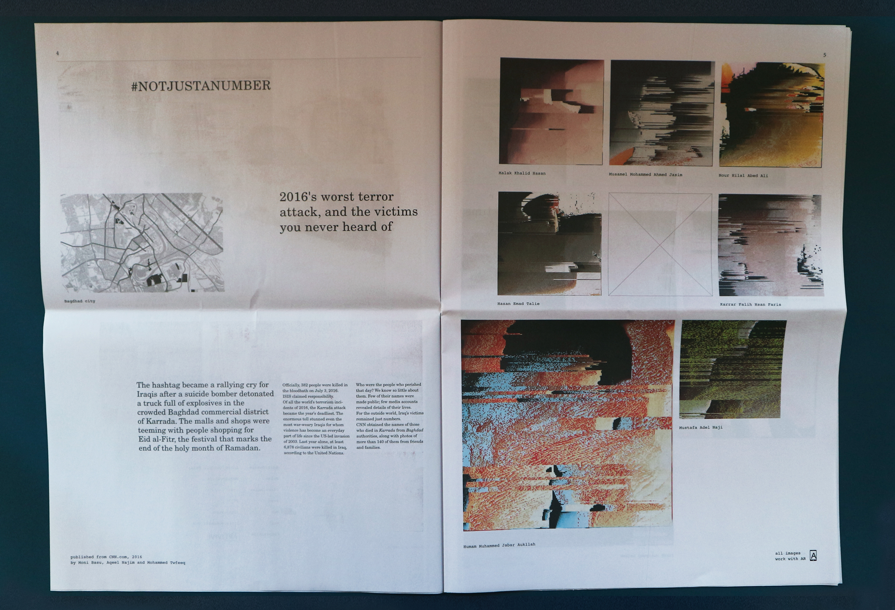
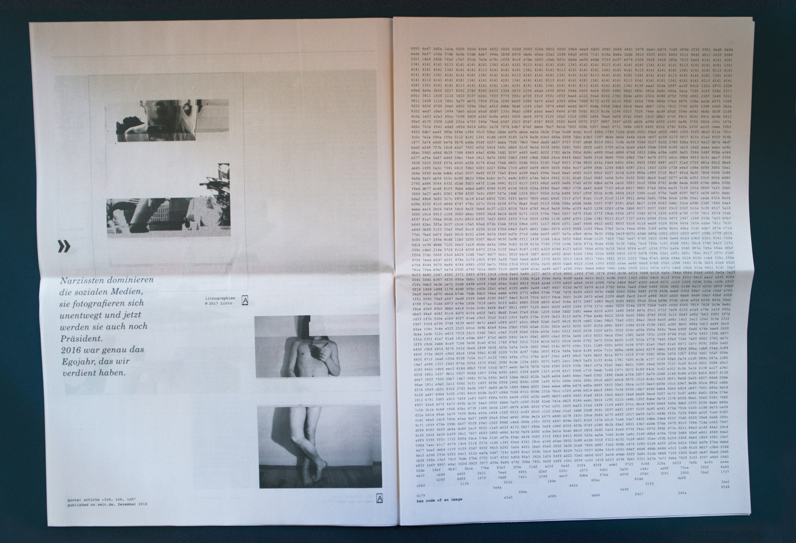
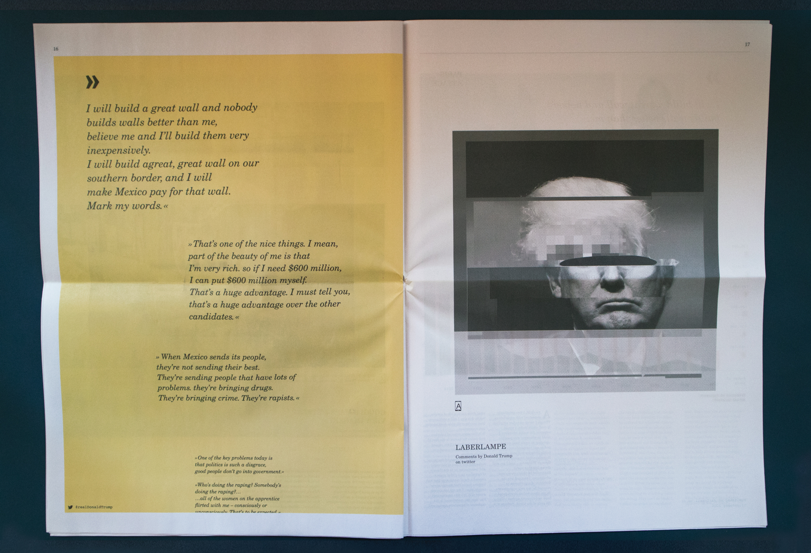
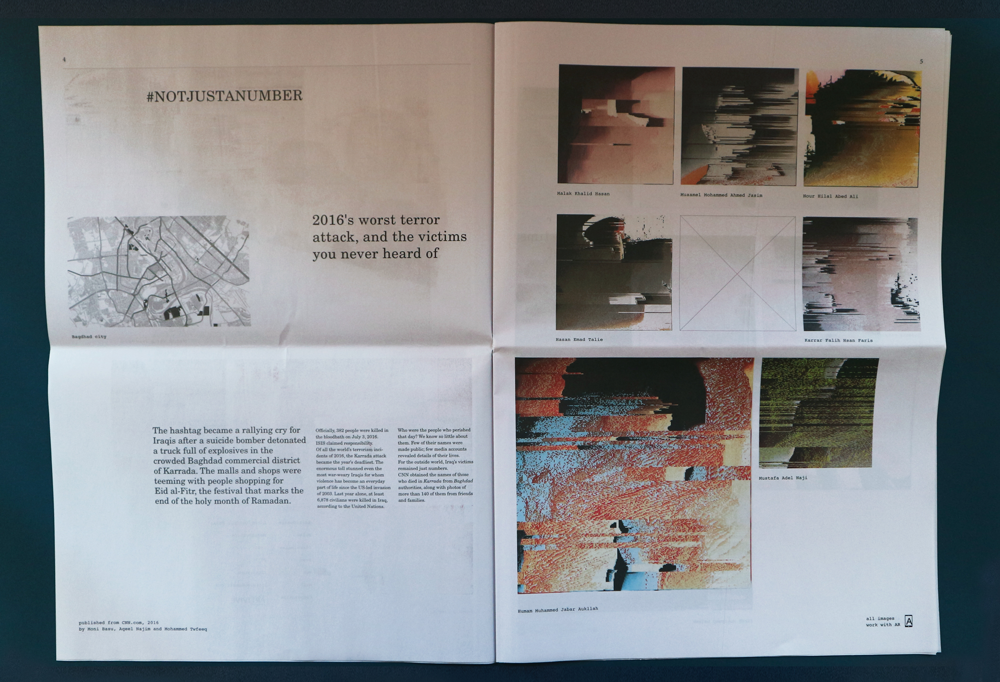
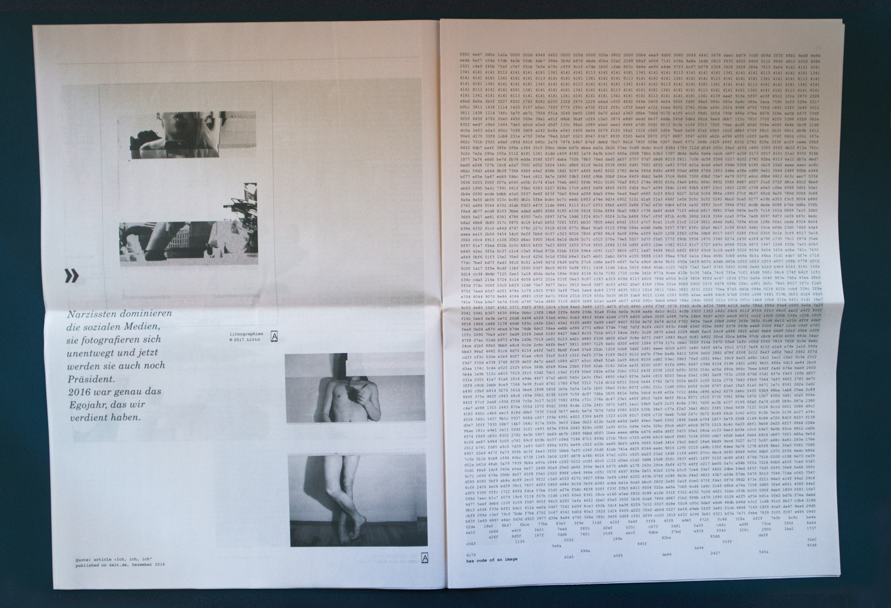
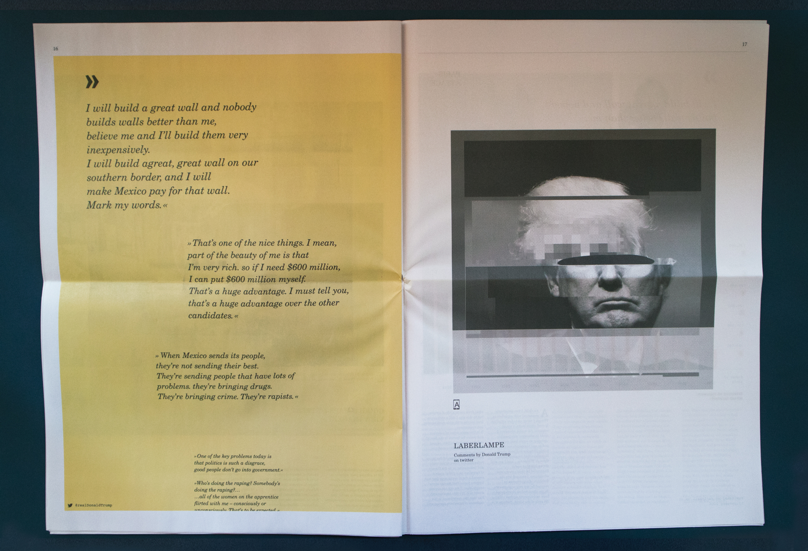

Ordering a pizza has never been simpler. Or, if you’re feeling really adventurous, you could google a recipe for original Italian dough, put on a Youtube-tutorial, skype with a college friend from Rome, remotely set the right temperature, instagram your freshly made pizza and post a witty article about the newfound ease of Italian pizzacraft on your lifestyle blog. Congratulations. New media has made you an expert on baked goods and while you’re munching on thinly sliced goodness, arguing politics on twitter you come accross a hashtag. #NOTJUSTANUMBER And suddenly, from the comfort of your home, within the dozing smell of molten cheese, you’re thrust into the lives and afterimages of those who went loudly and are remembered in silence.
…